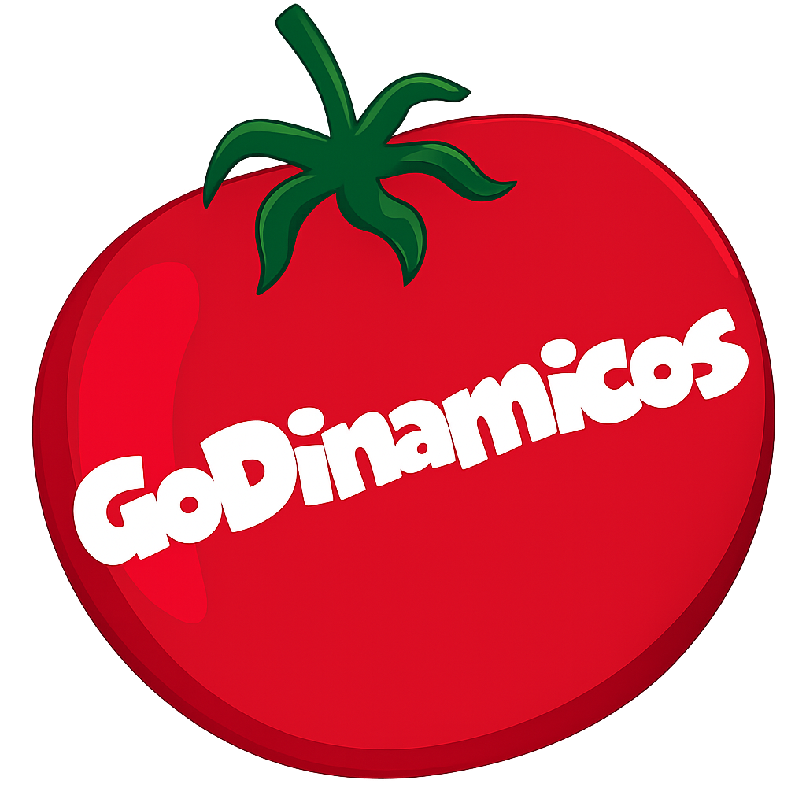
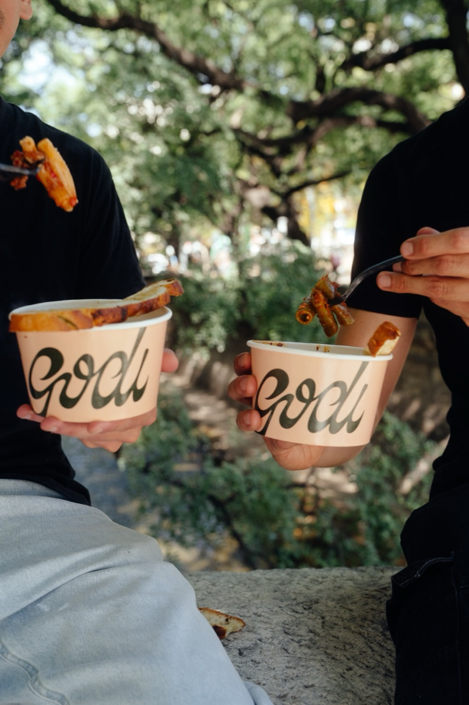
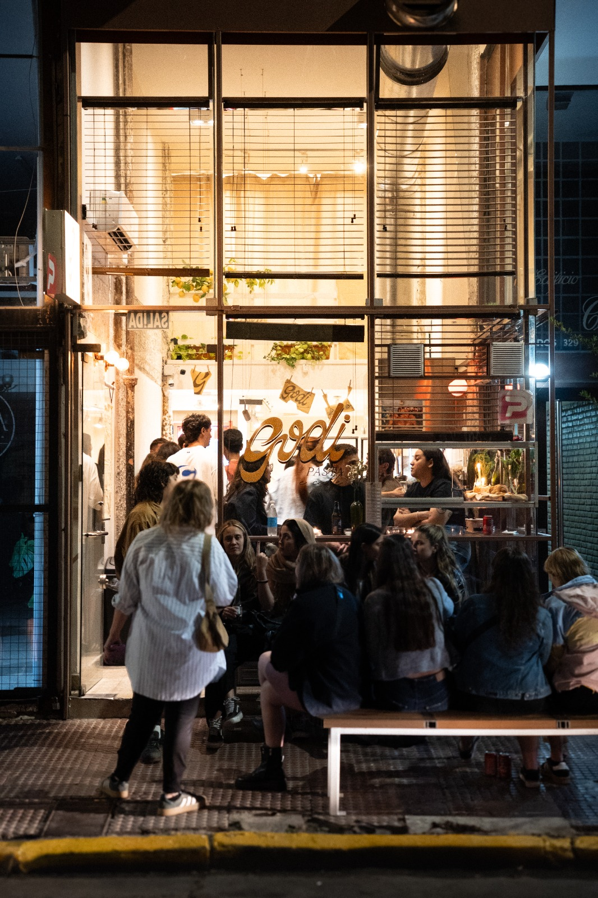
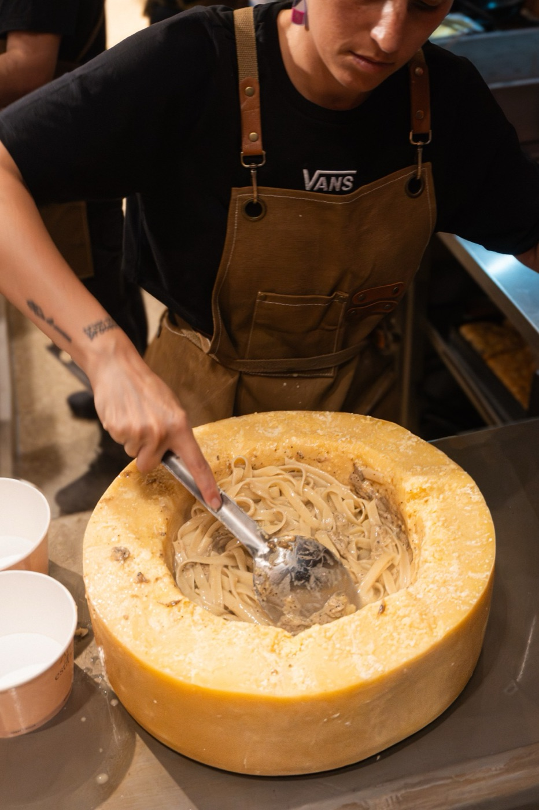
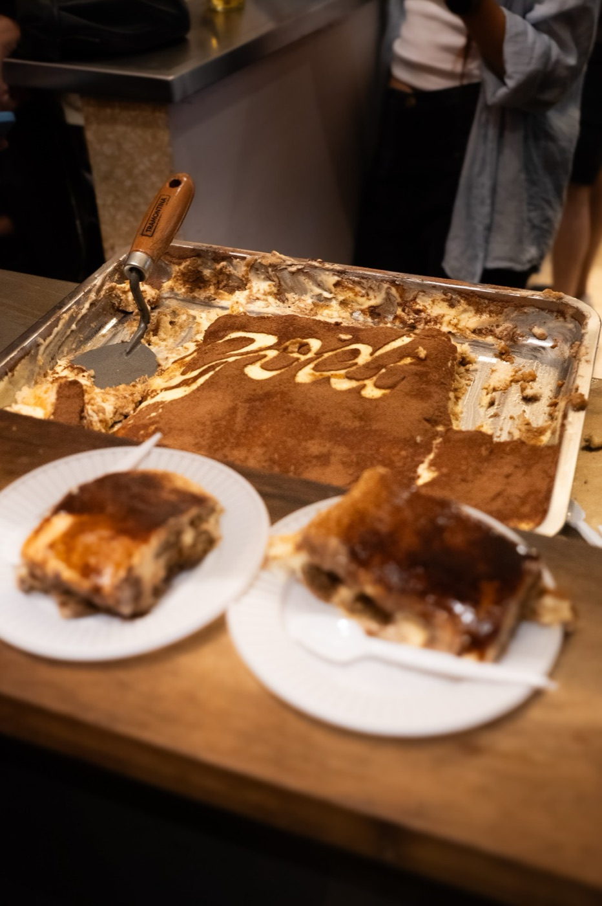
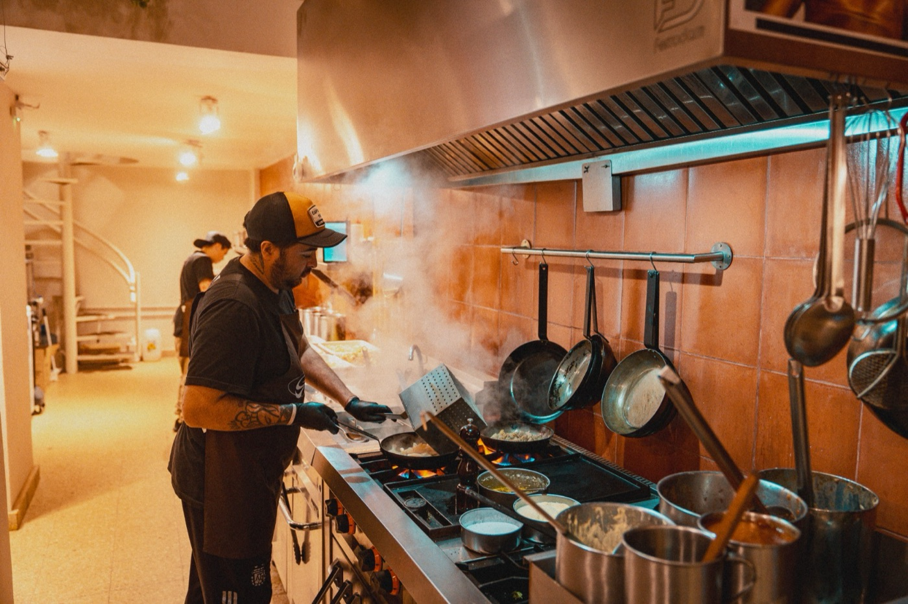
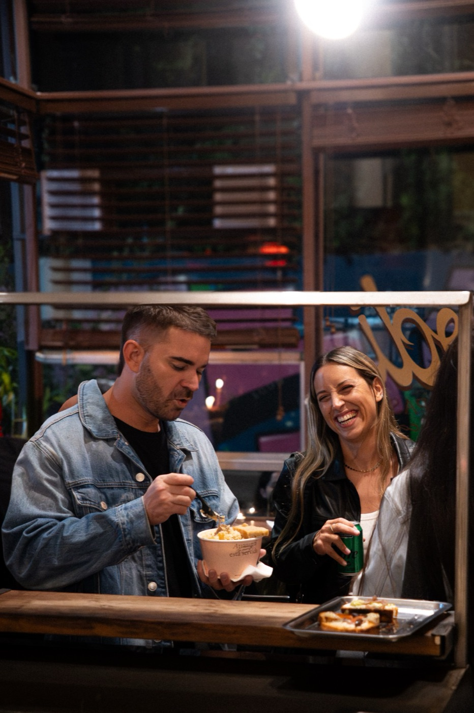
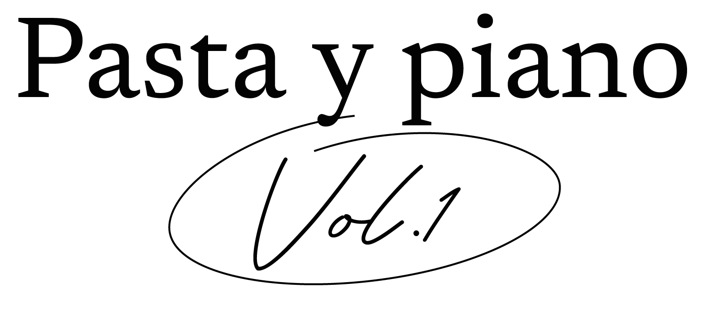
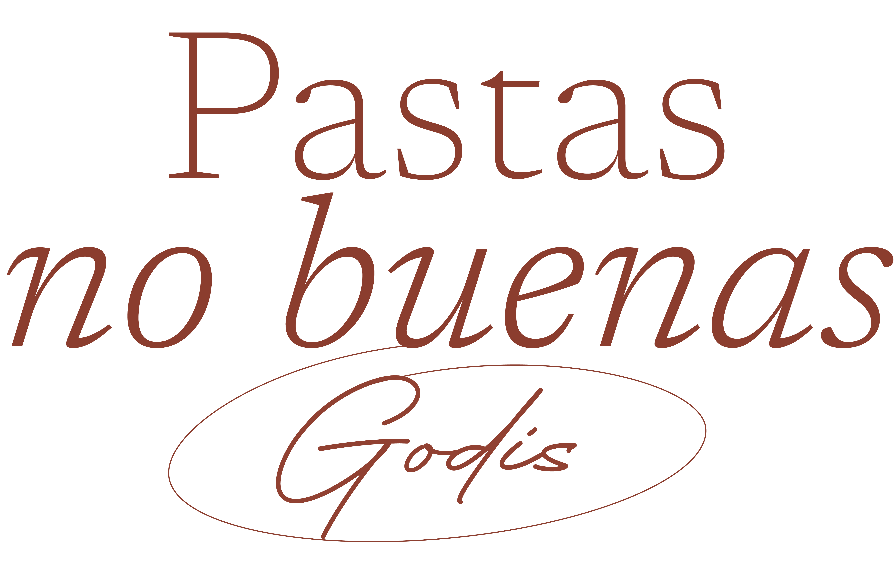

.png)

01
Pop Ups
Invitamos amigos del mundo de la gastronomía a lucirse en nuestra cocina.
Ver en Instagram
En Godi celebramos la simplicidad y el sabor. Ofrecemos bowls de pastas no rellenas, cocinadas al dente y combinadas con salsas caseras, listas en 5 minutos.
Pensado para quienes buscan una comida rica, rápida y reconfortante, nuestro formato al paso fusiona tradición italiana con ritmo urbano.
Nuestros platos se hacen con ingredientes estacionales y de calidad. Buscamos revalorizar la experiencia cálida de tradición italiana, con una vuelta de calle.






Invitamos amigos del mundo de la gastronomía a lucirse en nuestra cocina.
Ver en Instagram
Pasta, vino y música en vivo. La trattoria al paso con fondo musical. Una noche que reconforta la panza y alegra el cuore.
Ver en Instagram| Lunes | 11:30–15h |
| Martes | 12–15h · 20–23h |
| Miércoles | 12–15h · 19:30–23h |
| Jueves | 12–15h · 19:30–23h |
| Viernes | 12–15h · 19:30–23h |
| Sábado | 12–15h · 19:30–23h |
| Domingo | 20–23h |
